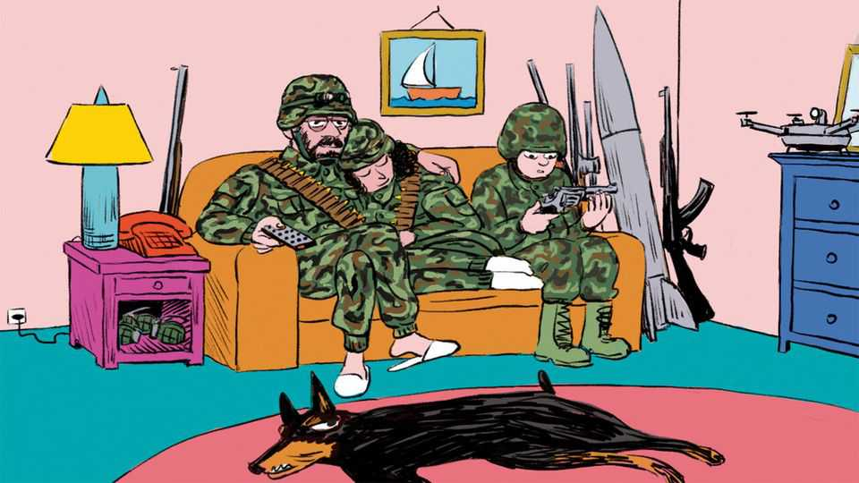

Europe is gearing up for a future war Russia is already waging
Living in a phoney peace

Oct 29th 2026
For eight months after France and Britain formally declared war on Germany in September 1939, remarkably little happened. The period became known as the “phoney war”: a curious interlude during which western Europeans purported to be fighting while in fact living at peace. (Not for long, alas.) Today Europe faces the inverse predicament. In theory no part of the continent west of Ukraine is at war with Russia. But peace ain’t what it used to be. Month after month Kremlin-paid stooges harass European airports with drones, sabotage railway lines, torch shopping centres, threaten defence-company executives, hack computer systems and spread morale-sapping disinformation on social networks. None of this amounts to conventional warfare—but neither does it feel like not-warfare. Call it the phoney peace. Russia is keeping Europe permanently off-balance, displaying too much belligerence to ignore, yet not enough to trigger direct retaliation.
War and peace, to borrow a Russian phrase, used to be mutually exclusive. Today in Europe they exist concurrently. This poses a dilemma: how much should Europe worry about threats of future invasion, and how much about the current reality of aggression? On one hand, the continent is gearing up for an old-fashioned war against Russia of the sort Leo Tolstoy might recognise, involving artillery and troop movements (and missiles and drones, these days). On the other, it is already embroiled in a different sort of conflict, one fought with sabotage and propaganda. The danger is that Europe fixates on the hard war Russia might wage tomorrow—the clear-cut one that generals have spent their careers preparing for—while neglecting the murkier one already in full swing.
For now, much of Europe’s focus is on the tanks-crossing-borders threat. That is unsurprising: spooks from various countries think Russia might try to launch an invasion of NATO territory by 2030. Military materiel is thus being ordered, soldiers trained and battalions positioned accordingly. Defence budgets have soared to meet the challenge. Before 2022 most NATO countries fell short of the target of spending 2% of GDP on defence. Now they are (mostly) on track to meet a revised target of 3.5%.
Arguments rage over how these new billions should be spent. Should European countries keep buying American weapons, or pay more to develop their own? Are tanks obsolete? Such trade-offs are best left to those who know one end of a howitzer from the other. Some investments would help fend off both conventional and unconventional threats. Take drones, the break-out weapons of both the Ukraine war and Russia’s low-grade attacks on other parts of Europe. Learning to deal with them will deliver rich dividends both on future battlefields and in today’s murkier situation, when drone incursions have become routine.
Debates over what kit to buy risk obscuring a broader question: what is the right split between spending on defence versus on security more broadly? Much of that 3.5%-of-GDP splurge has been conceived around the risk of a war of territorial conquest that seems foolhardy even for the mercurial Vladimir Putin. Russia has spent five years trying to win a three-day war against its neighbour; taking on NATO would be a curious choice of encore.
Meanwhile, the Kremlin is already waging a war of sorts on Europe. For what else to call the constant stream of sabotage and provocation? Researchers at the International Centre for Counter-Terrorism, a Dutch outfit, have documented over 180 such incidents linked to Russia since 2022. Some amount to little more than souped-up vandalism, carried out by petty criminals hired over the internet for a few hundred euros. Others are so reckless that casualties seem inevitable sooner or later. In 2024 incendiary devices planted in parcels passing through European logistics hubs threatened to bring down cargo aircraft. In August an explosives-laden drone was discovered at Leipzig airport in Germany.
Europeans are hardly oblivious to the need to fight off so-called “grey-zone” warfare. Alongside the pledge to spend 3.5% of GDP on defence, NATO members committed to devote 1.5% to broader security needs, including protecting critical infrastructure, improving civil resilience and so on. But the latter target is loosely defined, and mainly encompasses existing spending. Nor is money the only obstacle. Territorial defence is expensive, but it is familiar territory for military types, albeit fuzzier now that drones have muddied the waters between conventional and unconventional fighting. Protecting Europe against sabotage and dirty tricks—both deterring attacks and minimising their impact—is a messier business. It often requires police forces, local authorities and private companies to work together. Nordic countries have long taken such matters seriously. In Germany they are now part of the public debate. Others need to catch up.
The lesson is not that spending on security—the stuff needed to counter low-level aggression—should come at the expense of territorial defence. On the contrary: it is precisely because NATO’s hard-power deterrence is so credible that Russia has resorted to unconventional warfare. Europe needs to get better at preventing such attacks, and at minimising the damage if they succeed. But how to push back against Russia—which often denies being behind attacks—without entailing dangerous escalation?
There is one easy way for Europeans to show the Kremlin that its campaign of intimidation is futile. Much of the Russian mischief is ultimately intended to undermine European support for Ukraine. In November European leaders will have to agree a new aid package to keep Ukraine solvent while it fends off its invader. A generous offer would send a strong message: Russian sabotage will not cause Europe to waver in its support. The current peace, phoney as it is, can be sustained only with steadfast resolve.■